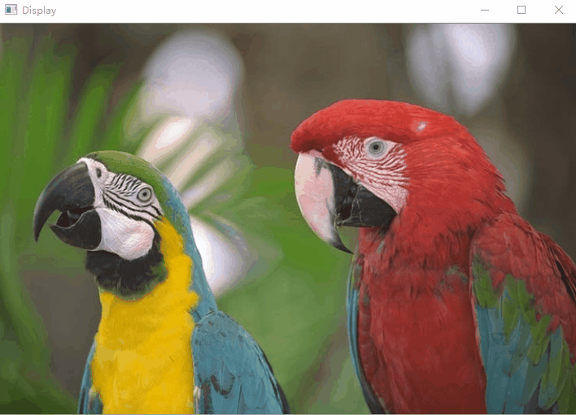
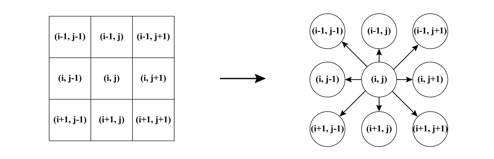
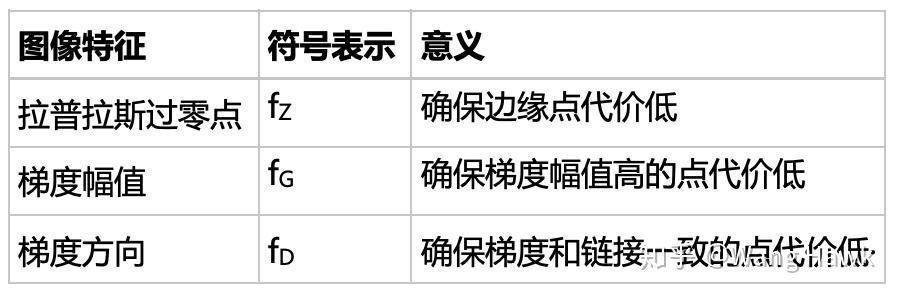
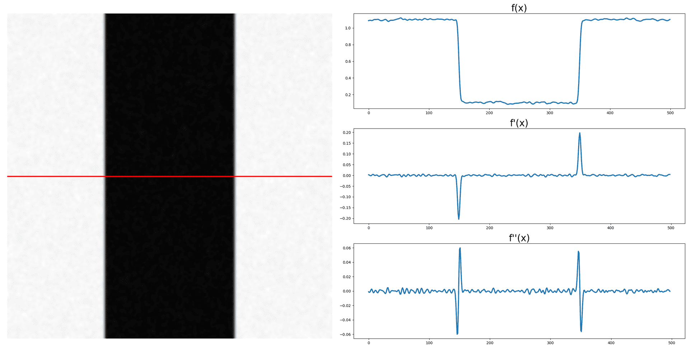
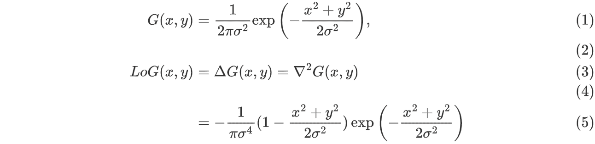
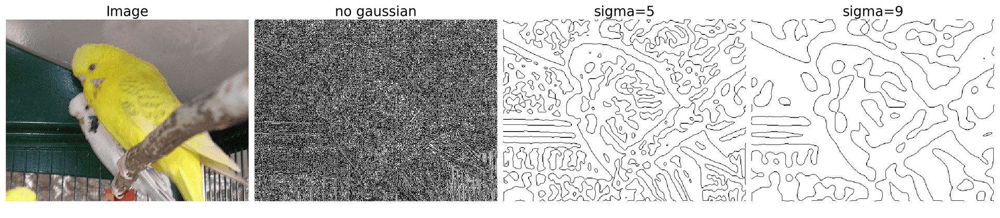
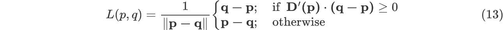
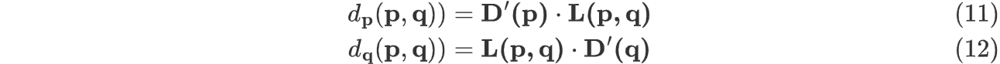
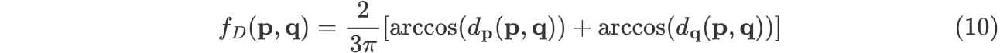
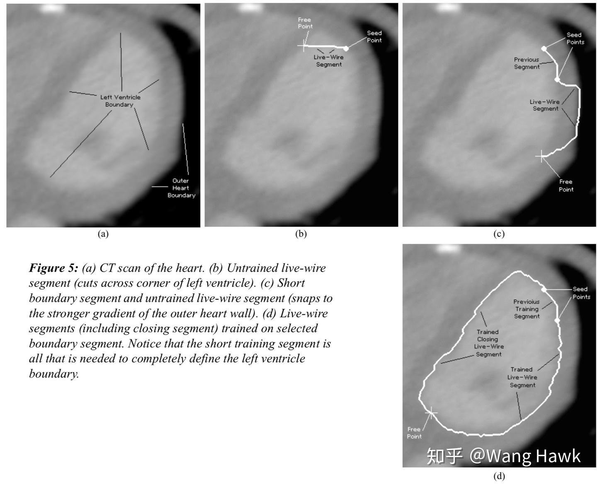

智能套索学习记录（Intelligent Scissors）
智能套索是什么，如下所示，基本上人人都知道的功能：

总览
首先需要用八联通将图片转为一张图：

构造图之后，总体的操作流程如下:
1. 为边计算损失, 包括静态权重和动态权重
2. 用户在待分割目标的边界给定初始种子点
3. 用户移动鼠标，即时计算上一种子点到鼠标点间的最短路径
4. 用户点击鼠标生成下一个种子点后，重复上一步操作，直到目标物体的轮廓勾画完成.
后三步都没什么好讲的，计算最小路径用的 Dijkstra 算法，重点在第一步中每条边的权重是如何计算的。权重包括静态和动态
静态权重计算
如下图所示，本质让边界处的权重小，这样最小路径才会沿着边界走：

代价计算就是他们合并起来即可，如下面的公式，其中 \(p\) 和 \(q\) 表示像素点：
可以看到，有的代价是点上的代价，有的是边上的代价。论文提到实验表明参数分别是 0.43, 0.43, 0.14，可以适用于很多图像。
拉普拉斯过零点 \(f_z(p)\)
尽管 1986 年 Canny 算子就已经发布，但作者并未采用。从图像的二阶导数看，当其为过零点时可以说明中心像素位于边缘上：

计算方式如下，计算的二阶导数而不是简单的拉普拉斯，当结果为 0，说明这个点是边缘，那么就让点的权重变小，这样最小路径大概率会经过这个点：

但是由于图像是离散的，拉普拉斯真正为 0 的像素点非常少，直接这样做就找不到很多边缘点了。所以作者认为在如果两个像素点的拉普拉斯值符号相反，那么它们之间有一个过零亚像素点。于是就会选择两个像素点中离边缘最近的点作为实际计算中的过零点。通过这样的折中，就会得到图像上的单像素边缘曲线。

论文参数：使用了两种大小的高斯核: 5x5 和 9x9，各自计算 LoG，并以 0.45 和 0.55 的权重进行加权得到最终的结果。
梯度大小 \(f_G(p)\)
梯度就正常的梯度计算，即 \(G = \sqrt{I_x^2 + I_y^2}\)。同样的，梯度越大说明越可能是边缘，就让这个点的权重变小，让最小路径尽可能经过这个点：
和拉普拉斯一样，也用了多个核大小，各自算出梯度值之后进行合并，但不是加权，而是取最大值，有两个方案：
1. 取各自算出来梯度的最大值，这个很简单，但也很有效，也是最终采纳的方案
2. 对多核的拉普拉斯零交叉点的斜率绝对值取 maximum，取斜率绝对值大的核对应的梯度大小
梯度方向 \(f_D(p, q)\)
梯度向量指向可能最大强度增加的方向，考虑三个场景：
1. 两个点梯度方向很接近，而且和两点之间的连接方向接近垂直，说明这条边靠谱，代价要低
2. 两个点梯度方向很接近，但和两点之间的连接方向不垂直，说明这条边没有沿着边界，代价要高
3. 两个点梯度方向不接近，这个时候不管两点的连接方向了，总之代价要高
这里网上几篇文章都出现了理解错误，都说梯度方向和连接方向一致才是低代价，我看了原文和公式，应该梯度方向和连接方向垂直才是低代价。
从上面看，有三个方向要看：两点连接方向和两点各自的梯度方向。
两点连接方向如下（不用管后面的 D'，总之很容易看出是单位向量）：

两点各自的梯度方向定义为 \(D(p)\) 和 \(D(q)\)，旋转90度后的方向叫做 \(D'(p)\) 和 \(D'(q)\)。
那么 \(f_D(p, q)\) 的计算公式如下：


动态权重计算
为什么需要动态权重，可以看下面的图，可以看到©图中算法跟踪到了具有强梯度幅值的外边缘，而非原本想要抠出的内部边缘。因此引入在线学习，算法会根据当前曲线之前的少量像素的特征来推断新的边界像素的特征。这就是动态权重。

一共有三个特征：Edge pixel value \(f_P(p)\)，Inside pixel value \(f_I(p)\)，Outside pixel value \(f_O(p)\)
训练数据准备
训练的数据来源就是已经确定好的边。我们用这些边准备好数据，后面会用直方图计算他们的分布，以此用于后续确定新的边。
边像素值 (edge pixel values) 损失的计算很简单，就是像素值：
内部和外部像素值(inside and outside pixel values) 损失计算是沿着梯度方向一定距离的地方采样的（\(k\) 是参数，\(D\) 就是梯度方向）：
直方图计算
就正常计算直方图，符号是 \(h\)，即分别有 \(h_P\)，\(h_I\)，\(h_O\)。此外为了防止点很少，噪声比较多, 因此对直方图应用一维高斯平滑来抑制噪声。
直方图的意义是什么，直方图代表了一种概率分布。我们拿最简单的 edge pixel value 来说，训练完毕后，此时要计算新的路径了，对于每个点它有一个 \(f_P\) 值，就可以到 \(h_P\) 直方图中去找 \(f_P\) 对应的概率值，其代表了原来的那些边中，有多少比例的点是 \(f_P\)。
其他说明
1. 这种训练是反复进行的，新加了一条边，就要更新直方图。
2. 其实梯度大小（静态权重）也是可以用这种直方图训练的。
3. 这里原文有很多公式，很绕，但总体思想就是上面的逻辑。
参考
1. Jarvis's Blog: https://www.jarvis73.com/2020/07/09/Intelligent-Scissors/#24-pixel-value-features-%E5%83%8F%E7%B4%A0%E5%80%BC%E7%89%B9%E5%BE%81
2. Wang Hawk 的知乎分享：https://zhuanlan.zhihu.com/p/61302177
3. Interactive segmentation with intelligent scissors. Mortensen E N, Barrett W A. In Graphical models and image processing, 1998, 60(5): 349-384. [PDF].
4. Intelligent scissors for image composition. Mortensen E N, Barrett W A. In Proceedings of the 22nd annual conference on Computer graphics and interactive techniques. 1995: 191-198. [PDF].